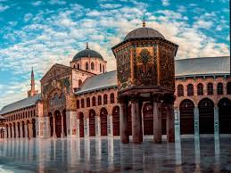
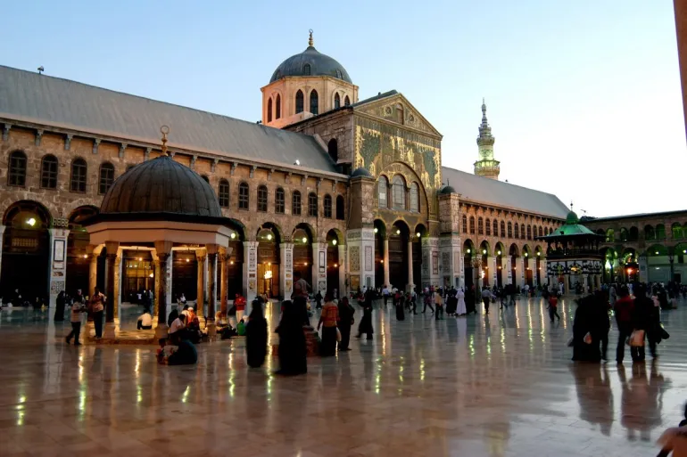
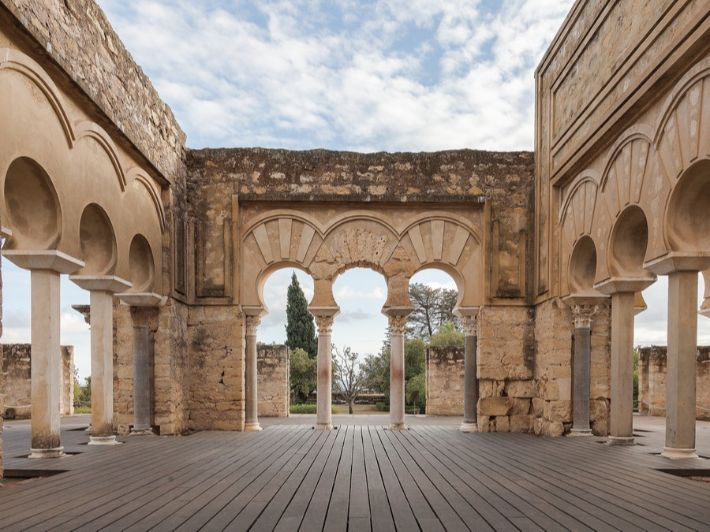
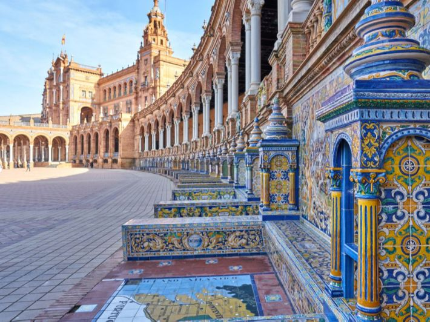
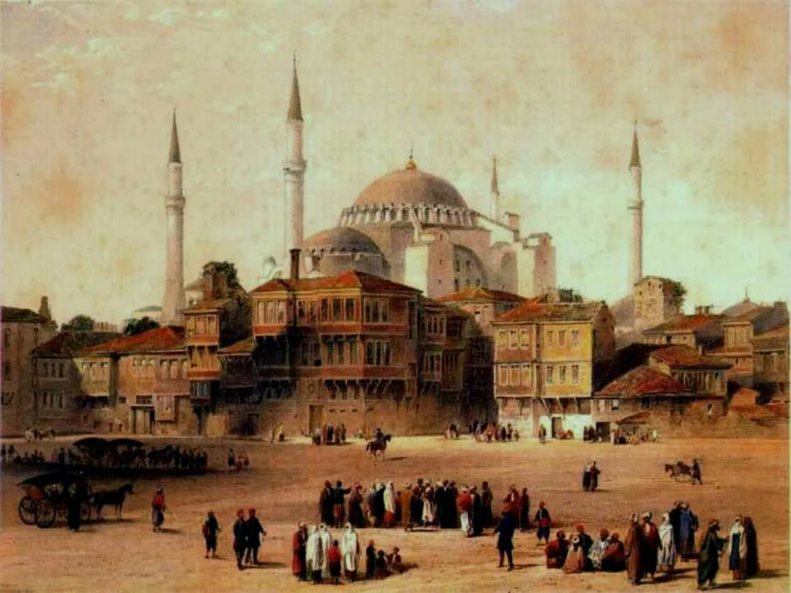
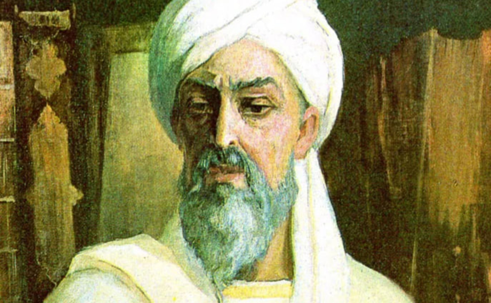
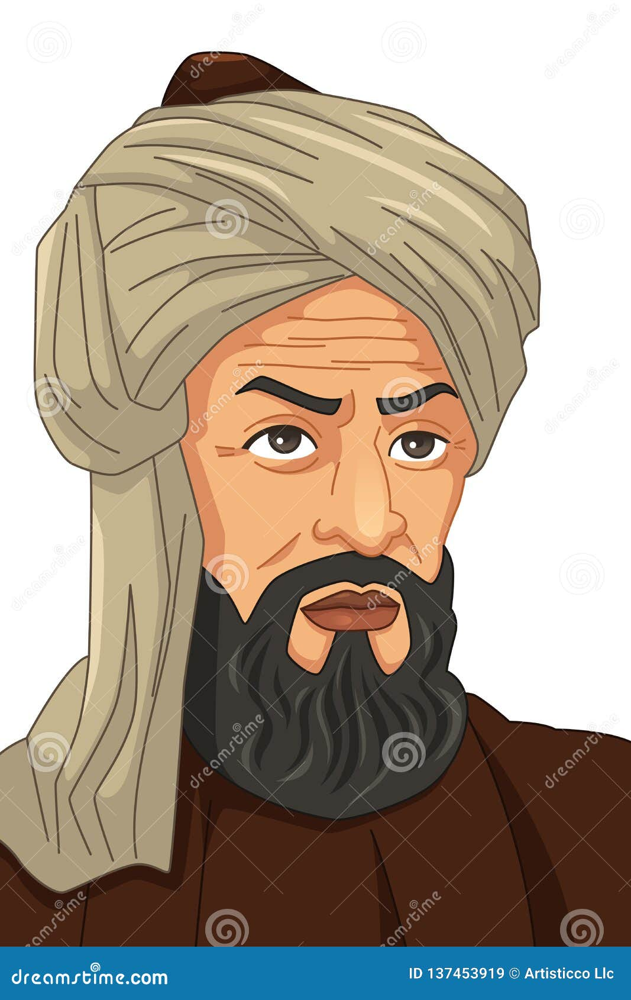
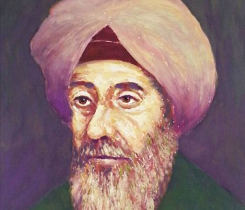
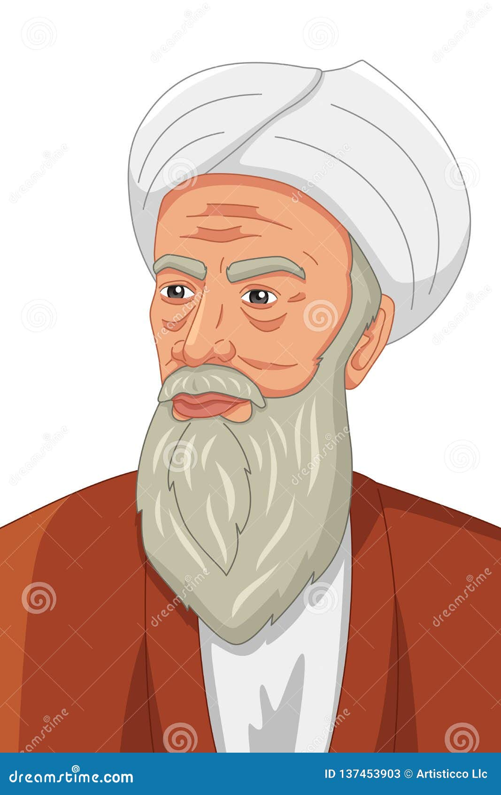
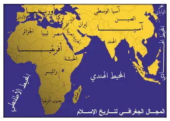

نشأة الحضارة الإسلامية
بدأت الحضارة الإسلامية مع ظهور الإسلام في مكة المكرمة، وانتشرت بسرعة لتصبح واحدة من أعظم حضارات التاريخ الإنساني.
رحلة عبر التاريخ لاكتشاف أعظم إنجازات المسلمين في العلوم والفنون والعمارة.
ابدأ الرحلة
بدأت الحضارة الإسلامية مع ظهور الإسلام في مكة المكرمة، وانتشرت بسرعة لتصبح واحدة من أعظم حضارات التاريخ الإنساني.

شهد العصر الأموي توسع الدولة الإسلامية ووصولها إلى الأندلس وأجزاء واسعة من آسيا وإفريقيا.

كان العصر العباسي عصر ازدهار العلم والترجمة وظهور العلماء في الطب والفلك والرياضيات.

أصبحت الأندلس مركزًا للحضارة الإسلامية في أوروبا وازدهرت فيها العلوم والفنون والعمارة.

استمرت الدولة العثمانية لأكثر من 600 عام وكانت من أقوى الإمبراطوريات الإسلامية في التاريخ.
مجموعة من أبرز العلماء الذين ساهموا في نهضة العلوم في الحضارة الإسلامية.

ابن سينا عالم وطبيب وفيلسوف مسلم، اشتهر بكتاب "القانون في الطب" الذي ظل مرجعًا طبيًا لعدة قرون.

الخوارزمي عالم رياضيات وفلك مسلم، يُعرف بأنه مؤسس علم الجبر وساهم في تطوير النظام العشري.

ابن الهيثم عالم مسلم برع في علم البصريات، ويعد من أوائل العلماء الذين استخدموا المنهج العلمي.

الرازي طبيب وكيميائي وفيلسوف مسلم، من أعظم أطباء الحضارة الإسلامية وله مؤلفات مهمة في الطب.
تألقت الحضارة الإسلامية بفنون العمارة والزخارف التي أبهرت العالم عبر القرون.
مؤلفات طبية
اكتشافات رياضية
تجارب كيميائية
مراصد فلكية
برع المسلمون في الطب والجراحة وابتكروا المستشفيات والأدوات الطبية.
أسس العلماء المسلمون علم الجبر وطوروا الأرقام والخوارزميات.
ساهم العلماء المسلمون في تطوير المختبرات والتفاعلات الكيميائية.
أنشأ المسلمون المراصد الفلكية وحددوا مواقع النجوم والكواكب.
تميزت الحضارة الإسلامية بالعمارة والهندسة الدقيقة.
رحلة بصرية وصوتية لاستكشاف عظمة الحضارة الإسلامية من خلال الفيديوهات والخرائط التاريخية والمحتوى التراثي.
استكشف عظمة الحضارة الإسلامية في الأندلس وتأثيرها على أوروبا والعالم.
وثائقي يعرض إنجازات المسلمين في العلوم والفنون والعمارة الإسلامية.

استمتع بالأجواء التراثية الإسلامية من خلال الصوتيات التاريخية والإنشادية.
اختبر معلوماتك حول الحضارة الإسلامية والعلماء المسلمين.
نرحب برسائلكم واقتراحاتكم حول محتوى الحضارة الإسلامية.
مشروع تعليمي تفاعلي يهدف إلى إبراز عظمة الحضارة الإسلامية وإنجازات المسلمين في العلوم والعمارة والفنون والتاريخ، بأسلوب حديث يجمع بين التقنية والمعرفة لإحياء الإرث الإسلامي بصورة إبداعية.
منصة رقمية تفاعلية صُممت لنقل جمال الحضارة الإسلامية للأجيال بأسلوب بصري حديث وتجربة ممتعة.